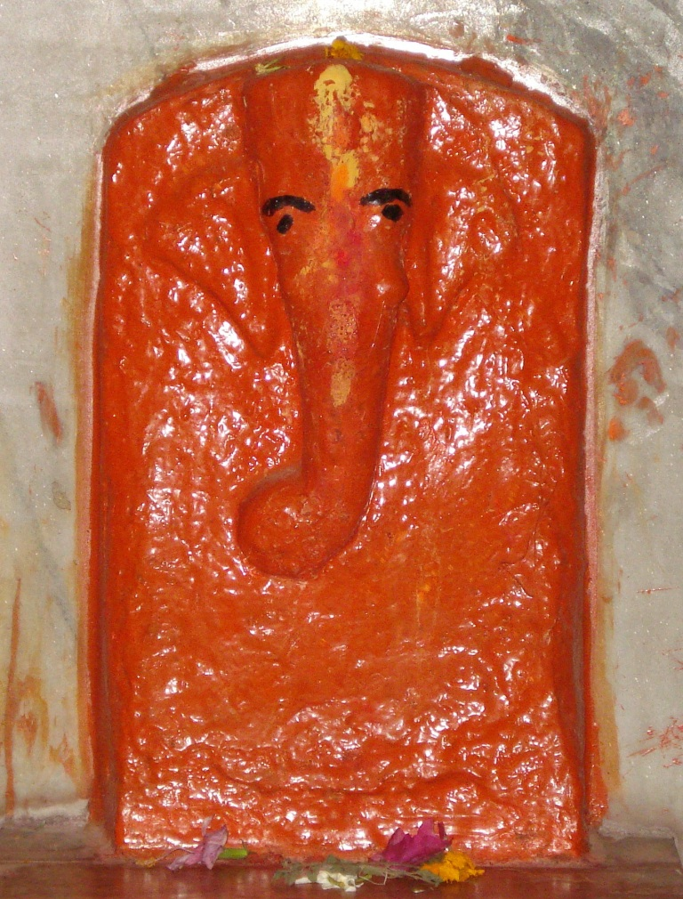

<?xml version="1.0" encoding="UTF-8"?><rss version="2.0"
	xmlns:content="http://purl.org/rss/1.0/modules/content/"
	xmlns:wfw="http://wellformedweb.org/CommentAPI/"
	xmlns:dc="http://purl.org/dc/elements/1.1/"
	xmlns:atom="http://www.w3.org/2005/Atom"
	xmlns:sy="http://purl.org/rss/1.0/modules/syndication/"
	xmlns:slash="http://purl.org/rss/1.0/modules/slash/"
	>

<channel>
	<title>Munda Vinayak &#8211; Varanasi Temples</title>
	<atom:link href="index.html" rel="self" type="application/rss+xml" />
	<link>../../../../index.html</link>
	<description>Temples of Varanasi as referred to in Kashi Khand</description>
	<lastBuildDate>Thu, 19 Jun 2025 05:16:46 +0000</lastBuildDate>
	<language>en-US</language>
	<sy:updatePeriod>hourly</sy:updatePeriod>
	<sy:updateFrequency>1</sy:updateFrequency>
	<generator>https://wordpress.org/?v=4.6.29</generator>
	<item>
		<title>MUNDA VINAYAK</title>
		<link>../../../../vinayak-temples/munda-vinayak/index.html</link>
		<pubDate>Sat, 08 May 2010 02:24:15 +0000</pubDate>
		<dc:creator><![CDATA[admin]]></dc:creator>
				<category><![CDATA[Munda Vinayak]]></category>
		<category><![CDATA[Vinayak Temples]]></category>

		<guid isPermaLink="false">../../../../p=128.html</guid>
		<description><![CDATA[Munda Vinayak is located at Sadar Bazar in Chandi Temple, after JHV Mall/Hotel Clarks. This Vinayak is considered as omni potent.    The idol is placed near the devi idols and only the head is visible. (MUNDA VINAYAK) In the Cantonment area, if a devotee proceeds on the road where various posh hotels are located, he [&#8230;]]]></description>
				<content:encoded><![CDATA[<p>Munda Vinayak is located at Sadar Bazar in Chandi Temple, after JHV Mall/Hotel Clarks. This Vinayak is considered as omni potent.    The idol is placed near the devi idols and only the head is visible.</p>
<p></p>
<p style="text-align: center;"><strong>(MUNDA VINAYAK)</strong></p>
<p>In the Cantonment area, if a devotee proceeds on the road where various posh hotels are located, he will come across Radisson, Ideal Towers, Hotel Clarks etc. and JHV Mall.  If he proceeds further on the road (known as Cariappa Marg), he will come across a turning to the right where there is an indicator reading “Bheeshma Chandi Devi temple”.  Munda Vinayak is located inside Chandi Devi Temple.</p>
<p>&nbsp;</p>
<p><strong>Please watch our YouTube Video about Munda Vinayak at following Link</strong></p>
<p>&nbsp;</p>
<p><a href="https://www.youtube.com/watch?v=MbC7Ju8ghLk&amp;t=55s">https://www.youtube.com/watch?v=MbC7Ju8ghLk&amp;t=55s</a></p>
<p>&nbsp;</p>
<p>&nbsp;</p>
<p><strong>TYPES OF POOJA</strong></p>
<p>This place of worship is open from 05.00 a.m. to 10.00 p.m. and devotees can worship as per their convenience. According to locals this temple is a powerful Shakti Peeth.</p>
]]></content:encoded>
			</item>
	</channel>
</rss>
